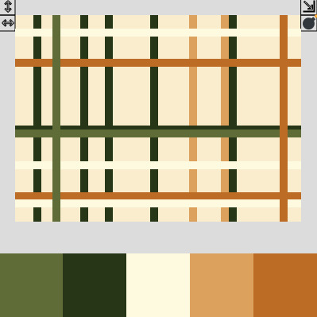

Lee Tusman
↩ Everyday
<
>
Title: Pattern Weaver MVP
Year: 2023
Medium: Software, Website, p5.js
Elevator pitch: Minimum Viable Project 30 minute speed code session to make a pattern weaving program for Dan Lichtman to teach about looms, weaving and coding. Color picker, thread direction, export, erase.
Url: https://leetusman.com/everyday/267/weaver/↪

 ©opyleft
©opyleft